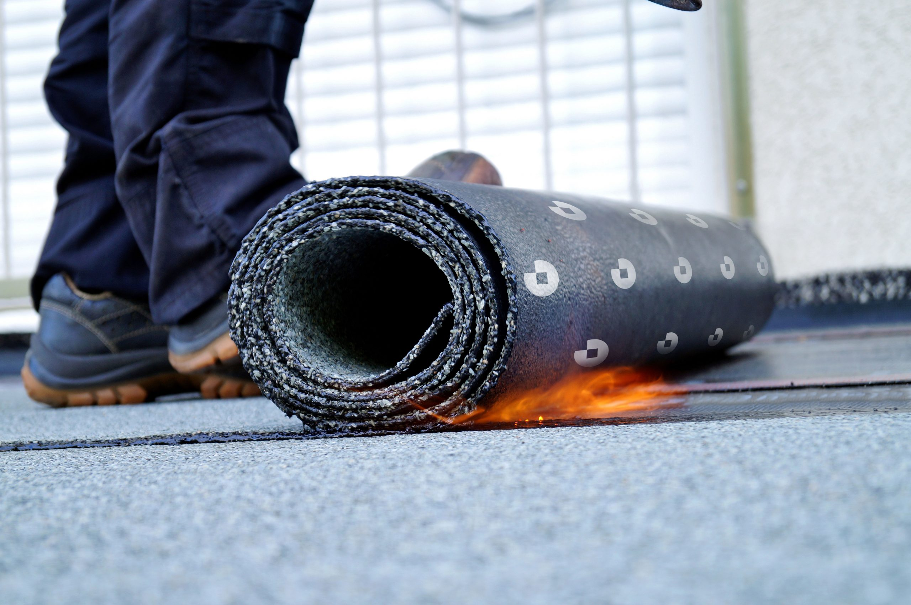
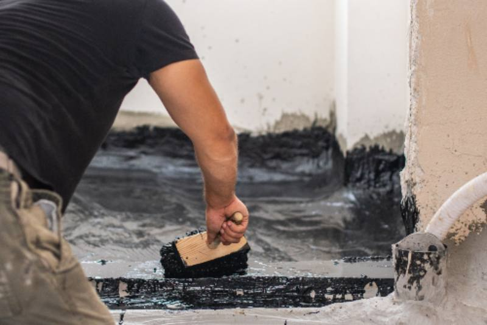
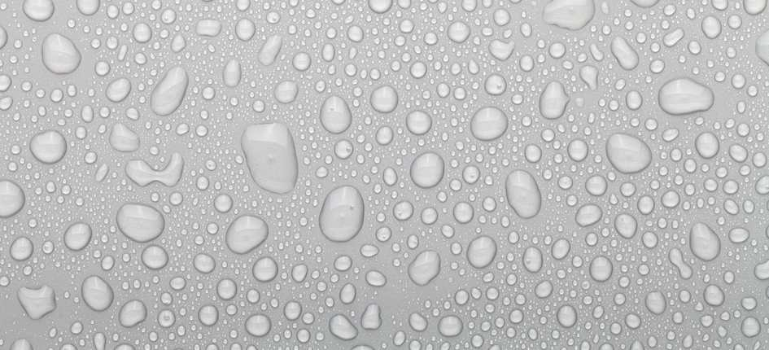
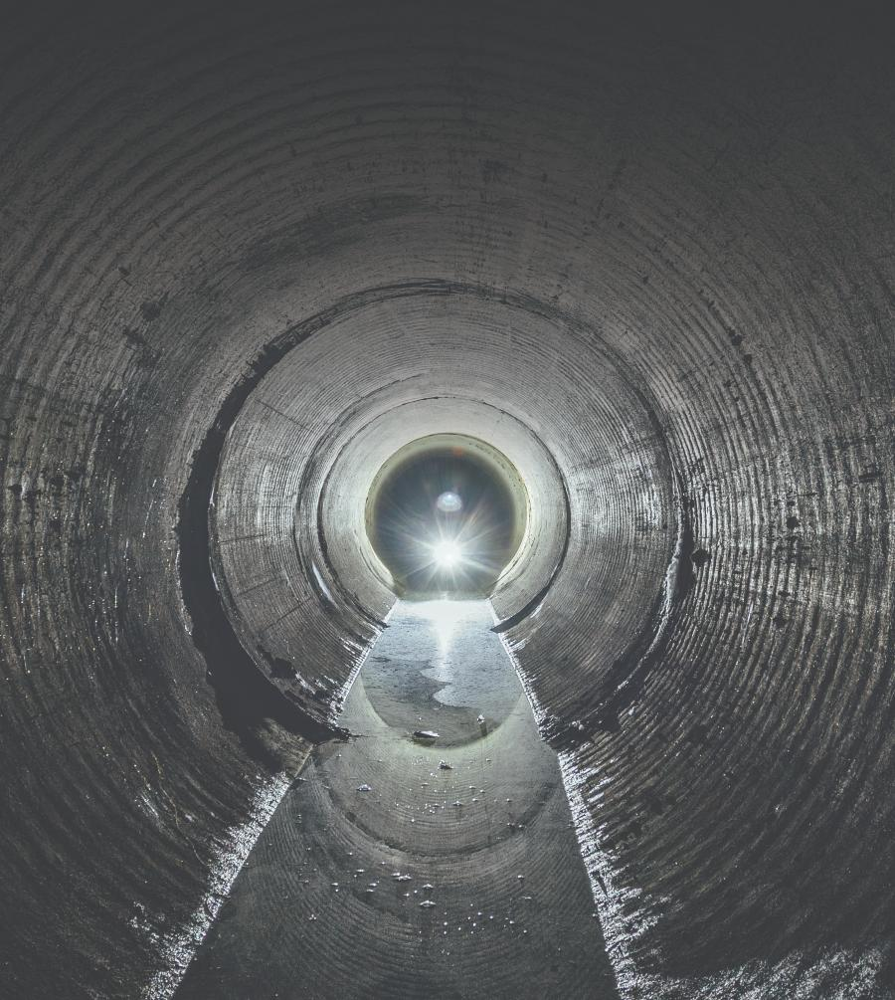

כל פתרונות האיטום המתקדמים של טמבור - לכל אתגר ומטרה

חלק ניכר מליקויי הבנייה בישראל קשורים בצורה כזו או אחרת לבעיות איטום. לנו כאנשי המקצוע יש את היכולת למנוע או לפתור בעיות איטום בהצלחה, לחסוך עלויות יקרות, למנוע נזקים כבדים ולהעלות את שביעות הרצון של הלקוחות. אחד האתגרים המרכזיים בדרך ליישום פתרונות האיטום בהצלחה, הוא לבחור את הפתרון המתאים ביותר לצרכי הפרויקט. כך למשל בחירת חומרי איטום שאינם עמידים מספיק לצרכי הפרויקט עלולה להוביל להתקלפות חומרי האיטום או להתרככות שלהם, וכתוצאה מכך לדליפות וחדירת מים. לחילופין, איטום גג אופקי החשוף למים עומדים בלי להשתמש בפתרון פוליאוריתני, עלול להוביל לחדירת מים לתוך התשתית.
אז איך בוחרים את פתרונות האיטום הטובים ביותר לצרכי הפרויקט?
כל פתרונות האיטום המובילים - במקום אחד
סדרת מוצרי האיטום TAMSEAL מאפשרת לכם להתמודד עם אתגרי האיטום. סדרה זאת מספקת מצד אחד מענה מקיף לכל צרכי האיטום, ומצד שני מעמידה לרשותכם את המומחים של טמבור, שיספקו לכם את הליווי והייעוץ המקצועיים ויסייעו לכם להתאים את הפתרון הטוב ביותר לפרויקט ולשימוש המתאים לכם.
סדרת מוצרי האיטום שלנו כוללת מגוון רחב של פתרונות לכל סוגי האיטום: מאיטום גגות, חדרים רטובים ומרפסות ועד איטום תת קרקעי, איטום מנהרות והזרקות בטון. בנוסף, פתרונות האיטום של טמבור הם חלק ממערכת כוללת של פתרונות לפרויקט. כך למשל, תוכלו לקבל במקום אחד מענה מקיף לכלל צרכי החדר הרטוב - מהתשתית ועד הדבקת הקרמיקה כולל רובה ופתרונות האיטום.
איטום גגות
פוליגג -
סדרת פוליגג (פוליגג 450 ופוליגג משוריין) מציעה ציפויים אקריליים לאיטום והלבנת גגות, בעלי כושר הלבנה גבוה ועמידות מצוינת לאקלים הישראלי. הם יוצרים יריעת איטום אלסטית חזקה, קלים ליישום ומתאימים למגוון תשתיות - בטון, יריעות ביטומניות ולוחות אסבסט. בנוסף, לפוליגג מקדם החזרה (LRV) גבוה, המסייע בהפחתת ספיגת חום והורדת טמפרטורת המבנה, ואף מזכה בנקודות זכות לבנייה ירוקה לפי תקן 5281.
PU 780 חומר איטום פוליאוריתני טהור, 100% חד-רכיבי, חזק וגמיש לאיטום גגות. החומר יוצר ממברנה רציפה ללא תפרים או חיבורים המהווה חיץ עמיד בפני תנאי מזג אוויר קשים ובפני מים עומדים למשך שנים רבות. PU 780 מתאים לשימוש על תשתיות כגון בטון, עץ, מתכת מטופלת, יריעות ביטומניות, משחות ביטומניות, אקריליות, פוליאוריתניות וכדומה, וכן לגגות מגוננים ואדניות (כולל גגות מתכת/איסכורית).
פוליאוריתן היברידי 777 לאיטום גגות - פוליאוריתן היברידי, המשלב חומרים אקריליים ופוליאוריתניים ומשפר את כושר ההידבקות לתשתיות השונות, יוצר ממברנה לבנה אשר עמידה בתנאי מזג אוויר קשים ובתנאי מים עומדים.
*טיפ מהמומחים של טמבור: על מנת לקבל איטום שעמיד לתנאים קשים ולמים עומדים, יש ליישם שכבת איטום בעובי 2 מ"מ לפחות.
איטום רצפות, חדרים רטובים ומרפסות
מגוון מוצרים ביטומניים ופוליאוריתניים המונעים חלחול או מעבר מים, בעלי מהירות ייבוש גבוהה, יכולות אטימה משודרגות ותצרוכת נמוכה יותר לכל מטר.
PB 707 -
איטום חד רכיבי של פוליאוריתן ביטומן, המשמש לאיטום רצפות, חדרים רטובים ומרפסות. PB 707 מספק איטום חזק ובעל כושר היצמדות גבוה. בנוסף, הוא חוסך זמן עבודה, בעזרת זמן ייבוש מהיר במיוחד ובזכות היכולת לבצע בדיקת הצפה כבר לאחר 24 שעות (בשונה מחומרים ביטומנים סטנדרטיים, המאפשרים לבצע בדיקת הצפה רק לאחר 72 שעות או יותר).
*טיפ מהמומחים של טמבור: ניתן לבצע את האיטום בשכבה אחת, בעובי של 1.5-2 ק"ג למטר רבוע.
Tamseal 790 -
חומר איטום צמנטי חד-רכיבי, מוכן לשימוש בתוספת מים בלבד, לאיטום קירות ורצפות בפני חדירת רטיבות - לשימוש פנימי וחיצוני. מתייבש במהירות, ללא VOC, ונוח ליישום בהברשה או גלילה. מתאים לתשתיות מינרליות סופגות כמו בטון וטיח צמנטי, כולל חדרים רטובים.
*טיפ מהמומחים של טמבור: אם מיישמים PB 707, מומלץ ליישם לפני כן שכבה של 790 Tamseal לקבלת מקדם הגנה כפול - כי על איטום איכותי לא מתפשרים!



איטום קירות חוץ
איטום מגוון רחב של מבנים ותשתיות לצורך מניעת לחות, רטיבות והצטברות של עובש ופטריות. הסילרים השקופים מסדרת TAMSEAL מבוססים על סולבנט או על מים, והם בעלי יכולות מתקדמות המותאמות לצרכי הפרויקט: יצירת אפקט דוחה מים, איטום סדקי שיערה דקיקים, ננו-סילרים המספקים עמידות גבוהה במיוחד ועוד.
ננו סילר 755 -
מיועד לאיטום קירות אבן, קירות לבנים או קירות מצופים בטיח מינרלי. מייצר אפקט דוחה מים, מספק הגנה מפני חדירת מי גשם ומונע התפתחות של צמחייה, טחב ועובש.
כאשר נדרש איטום של חזית המבנה, ניתן להשתמש ב-Tamseal 700 - חומר איטום צמנטי חד-רכיבי היודע לגשר על סדקים נימיים ומספק שכבת הגנה חזקה ואחידה.
טיפ מהמומחים של טמבור: כדאי לבצע את האיטום עוד בימי הקיץ ולא לחכות לגשמים.
איטום תת קרקעי
פתרונות האיטום התת-קרקעי כוללים מוצרים ביטומנים לאיטום יסודי של תשתיות בטון ולמניעת קורוזיה, ומוצרים פוליאוריתנים לתיקון של ליקויי איטום בצורה מהירה, יעילה וארוכת טווח.
סדרת מוצרי קצף הזרקה פוליאוריתני MasterRoc 355 - קצף נטול ממסים לעצירה של פרצות מים קלות עד חזקות במנהרות, פירים ומבנים תת-קרקעיים ולמילוי תפרים, סדקים וכיסי חצץ האוגרים מים.
Waterplug - מלט צמנט דו-רכיבי מהיר התקשות לעצירה מיידית ומלאה של מים זורמים או חדירת מים תחת לחץ דרך תפרים וסדקים. Waterplug משמש חומר איכותי במיוחד כאיטום מונע של תפרים בקירות ורצפות, לפני מריחת חומר איטום במרתפים, מאגרי מים ועוד.
722 Tamseal ו-Tamseal 724 -
חומרי איטום ביטומניים גמישים בתוספת פולימר, המתאימים במיוחד לאיטום משטחי בטון ותשתיות תת-קרקעיות, כמו קירות מרתף, קירות מסד, קירות תומכים, רצפות וכלונסאות. יוצרים ממברנה חזקה, גמישה והומוגנית בעלת כושר גישור מצוין על סדקים ועמידות גבוהה למים עומדים ולכלורידים. 722 Tamseal ו-724 Tamseal מצטיינים באדהזיה גבוהה לבטון וביכולת חסימת גז רדון, ומתאימים ליישום בהתזה או במריחה.
חשוב לדעת ש-724 הוא חומר רב-עובי המיועד למקרים שבהם נדרש איטום עבה במיוחד או חשיפה לתנאים קיצוניים, ואילו 722 מיועד לשכבות איטום בעובי סטנדרטי.
מילוי מישקים
פתרונות סיליקון לאיטום מפני רטיבות ולחות, המתאימים למגוון רחב של חומרי גלם, ומונעים התפתחות עובש ופטריות. מוצרי טמבור למילוי מישקים מתאפיינים במהירות הזמן ייבוש ובהיותם נטולי ריח לוואי.
סיליקון צבעוני 100% של טמבור הוא סיליקון צבעוני המתאים במיוחד לאמבטיות ומקלחונים בחיבור בין רצפה וקיר בחדרים רטובים ולסוגי תשתיות שונים, דוגמת אלומיניום, קרמיקה וזכוכית. הסיליקון תואם במיוחד לגווני הרובה של טמבור לקבלת מראה אחיד.
רובה CE40 - רובה איכותית, למילוי מישקים ברוחב 1-8 מ"מ בין אריחי קרמיקה, פסיפס, פורצלן, זכוכית ואבן טבעית. עמידה במים ודוחה רטיבות, עם נוסחה המונעת הופעת עובש ופטריות. קלה לניקוי, שומרת על גוון אחיד לאורך זמן ומתאימה לשימוש פנימי וחיצוני, כולל רצפות מחוממות.
כוחלה - חומר אבקתי רב-עובי למילוי מישקים רחבים (6-25 מ"מ) באריחים, קירות ורצפות, וכן למישקים גדולים בשיטת ברנוביץ'. מתאימה לשיש, אבן טבעית ומלאכותית, לשימוש פנימי וחיצוני.
בריכות ומאגרים
מערכות אמינות ובעלות כושר איטום גבוה של בריכות ומאגרים המצויים בלחץ מים מתמיד. פתרונות טמבור עומדים בסטנדרטים גבוהים, מאושרים לשימוש במי שתייה ונוחים ליישום.
מוצרי טמבור כוללים פתרונות איטום חד רכיבי Tamseal 700 לאיטום רצפות, יסודות של מבנים, מרפסות, חדרים רטובים, בריכות שחיה, תעלות ניקוז ותשתיות מינרליות סופגות; ופתרון איטום אלסטי דו-רכיבי Tamseal 702 לאיטום מרתפים, קירות מסד, מרפסות, מאגרי מים וכדומה, על בסיס צמנטי.
בנוסף, לטמבור גם מוצרי פוליאוריאה פוליהארד 100 ו-100 WB המספקים מענה למאגרי שתיה, מתקני התפלה וטיפול בשפכים, מיכלי דלק ועוד. סדרת פוליהארד מצטיינת בגמישות גבוהה, התקשות מהירה והתאמה לתשתיות פלדה ובטון.
פתרונות איטום והדבקה נוספים של טמבור
סופר 8 היברידי -
חומר איטום והדבקה היברידי חזק וגמיש, המתאים למגוון רחב של יישומים ביניהם איטום והדבקת פנלים, פסי גמר, משקופים, מראות וחומרי בידוד. בעל כושר הדבקה גבוה במיוחד למשטחים סופגים ובלתי סופגים, כמו בטון, עץ, מתכת, זכוכית, פלסטיק, קרמיקה ופורצלן. מתייבש במהירות, יוצר אטימה מלאה, עמיד בפני קרינת UV וניתן לצביעה (כולל בצבעים על בסיס מים). מתאים לשימוש פנימי וחיצוני, גם על תשתיות לחות.
סופר 8 HIGH TACK -
חומר איטום והדבקה היברידי בעל כושר הדבקה מיידי ועוצמתי במיוחד - עד 25 ק"ג לס"מ רבוע. מתאים לשימוש פנימי וחיצוני ולהדבקת חומרים כבדים כגון בטון, מתכות, אלומיניום, עץ, שיש, קרמיקה, פורצלן, זכוכית ומראות. עמיד בפני לחות, מים ו-UV, דוחה מים וניתן ליישום גם על משטחים רטובים. לאחר הייבוש יוצר חיבור חזק במיוחד היכול לשאת משקל של עד 300 ק"ג. ללא ממסים ואיזוציאנטים, קל ליישום וניתן לצביעה, כולל בצבעים על בסיס מים.
PU FLEX 80 -
אוטם פוליאוריתני חד-רכיבי וגמיש לאיטום תפרי התפשטות וחיבורים במבני בטון. בעל כושר הידבקות גבוה למגוון תשתיות, עמיד לקרינת UV ולתנאי מזג האוויר בישראל, ואינו מכתים אבן טבעית או שיש. מתאים לשימוש פנימי וחיצוני, כולל חזיתות, מרפסות ומבנים בשיטת ברנוביץ'. ניתן לצביעה לאחר ייבוש מלא.
SLF 77 -
חומר איטום סיליקוני אצטי רב-שימושי, גמיש וקל ליישום. מתייבש במהירות ומספק אטימה עמידה לאורך זמן בפני רטיבות, עובש ופטריות. מתאים למשטחים חלקים ובלתי סופגים כגון אלומיניום, קרמיקה וזכוכית. עמיד לקרינת UV ולתנאי אקלים קיצוניים. לשימוש בחדרים רטובים - אמבטיות, מקלחונים, מטבחים ושירותים.
רוצים לקבל מידע נוסף על פתרון האיטום המתאים לפרויקט שלכם? הקטלוג המלא של מוצרי האיטום מחכה לכם כאן
נשמח להעניק מענה מדויק לצרכים שלכם במוקד המומחים שלנו: 6477*.